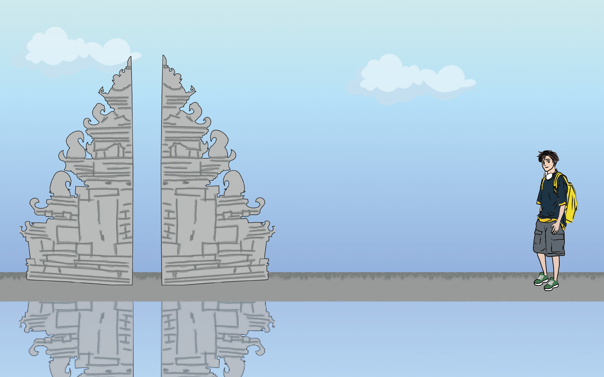
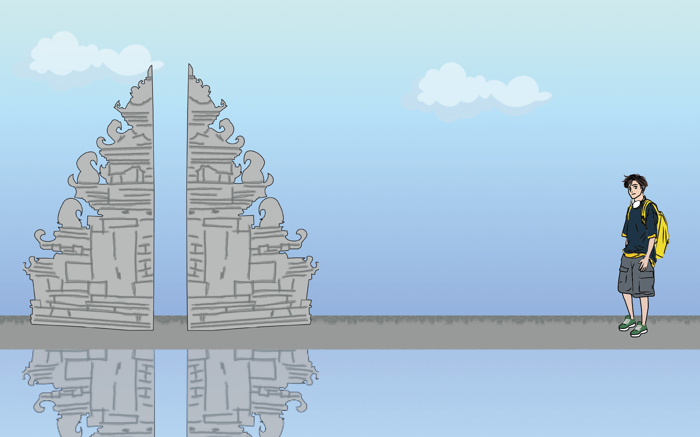
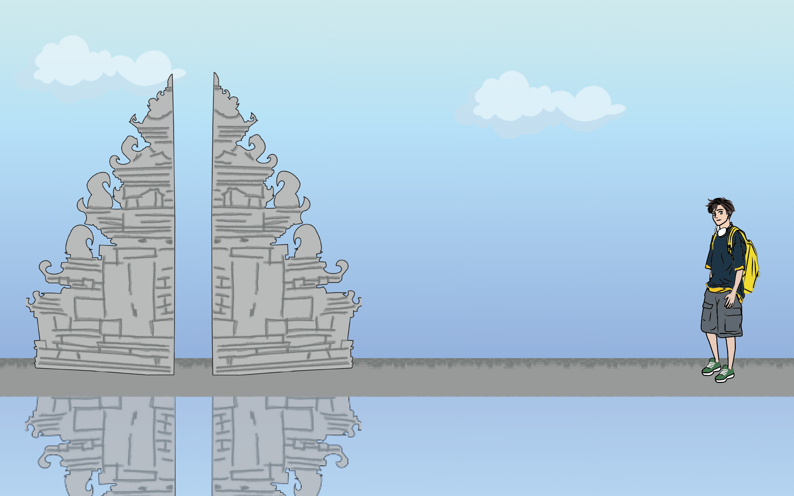
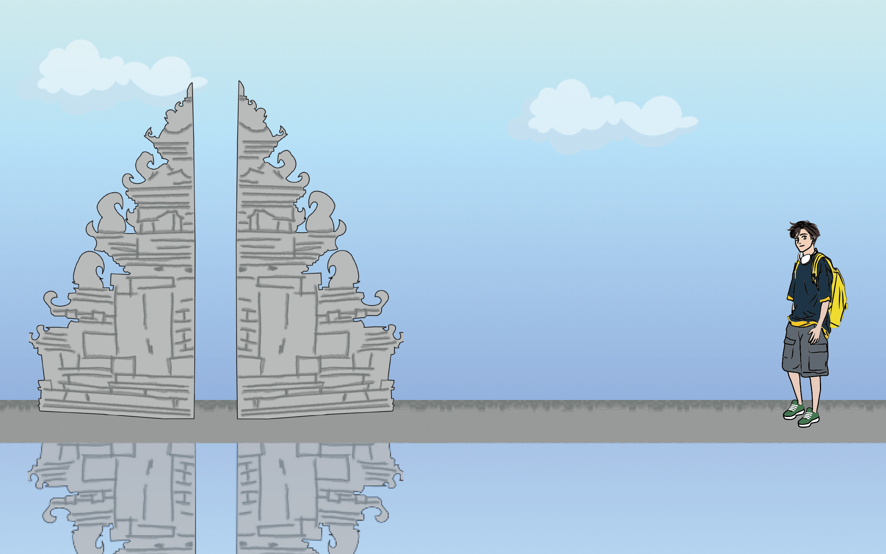

印 尼Indonesia
 



參考網站
這是我們的資料來源（可以自行複製下列網址查看喔）
習俗文化
飲食文化
特色食物：
https://www.vietjetair.com/zh-TW/pages/%E5%8D%B0%E5%B0%BC%E5%8D%81%E5%A4%A7%E8%91%97%E5%90%8D%E7%89%B9%E8%89%B2%E7%BE%8E%E9%A3%9F%E6%A6%82%E8%A7%80-1698717909993
仁當介紹：
https://opinion.cw.com.tw/blog/profile/403/article/7105
印尼肉丸介紹：
https://wgp.circlelinks.net/topic/180
炸魚餅介紹：
https://nanyangfood.tw/%E5%8D%B0%E5%B0%BC%E5%B7%A8%E6%B8%AF%E7%94%9C%E4%B8%8D%E8%BE%A3%E9%AD%9A%E7%9A%AEpempek/
特殊節日
印尼特殊節日：
https://ai.glossika.com/zh-tw/blog/indonesias-top-15-must-see-cultural-festivals
任抹時尚嘉年華：
https://orientaldaily.on.cc/content/%E5%85%A9%E5%B2%B8%E5%9C%8B%E9%9A%9B/odn-20220810-0810_00180_085/%E5%8D%B0%E5%B0%BC%E6%99%82%E5%B0%9A%E5%98%89%E5%B9%B4%E8%8F%AF%E9%82%81%E5%90%91%E5%9C%8B%E9%9A%9B
建築特色
建築介紹
建築特色：
https://academic-accelerator.com/encyclopedia/zh/architecture-of-indonesia
普蘭巴蘭：
https://www.wilhelmchang.com/zh/prambanan/
縮影公園：
https://tamanmini.com/taman_jelajah_indonesia/#
圖片來源
以下是圖片連結，皆是創用CC授權或組員親自拍攝
習俗文化
飲食文化
沙嗲：
https://upload.wikimedia.org/wikipedia/commons/4/4a/Satay_chicken.JPG
仁當：
https://live.staticflickr.com/65535/50850873961_ef033aa449_b.jpg
印尼肉丸：
https://live.staticflickr.com/7072/6936552626_b4f3c9620f_b.jpg
加多加多：
https://reurl.cc/OGqV1D
炸魚餅：
https://upload.wikimedia.org/wikipedia/commons/f/f5/Pempek_Palembang.jpg
特殊節日
塔布伊克節：
https://www.researchgate.net/publication/322148087/figure/fig3/AS:577423143116801@1514679813857/Traditional-event-Tabuik-source-http-wwwindonesia.pn
任抹時尚嘉年華：
https://upload.wikimedia.org/wikipedia/commons/e/e0/Sea_Goddess_from_JFC_2018.jpg
帕索拉節慶：
https://upload.wikimedia.org/wikipedia/commons/8/8e/Pasola.jpg
建築特色
建築圖片
印尼國家紀念塔：
https://live.staticflickr.com/656/22254202240_926a34e7eb_b.jpg
婆羅浮屠：
https://live.staticflickr.com/3047/2964074136_f17ede4ca2_b.jpg
普蘭巴南：
https://reurl.cc/Z97X7a
雅加達大教堂：
https://live.staticflickr.com/5663/31308467535_51fef53d81_b.jpg
縮影公園：
https://live.staticflickr.com/2736/4335870673_1006f38370_b.jpg
 參考網站
參考網站
 圖片來源
圖片來源